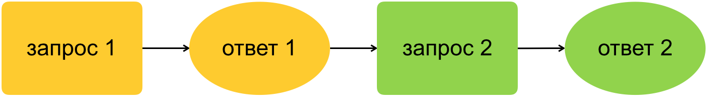
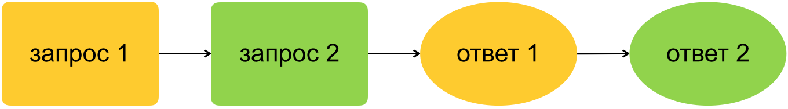
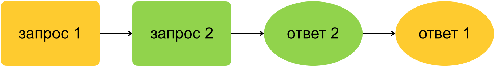

Виктор Хомяков, Яндекс
Виктор Хомяков, Яндекс
Я работал в трёх продуктовых компаниях, видел много кода в проектах на разных языках и фреймворках


const startDate = new Date();
startDate.setDate(startDate.getDate() - 1); // вчера
const endDate = new Date();
queryDatabase(startDate, endDate);
// запрос за дату date >= вчера && date < сегодня
const startDate = new Date(); // 2019-05-22
startDate.setDate(startDate.getDate() - 1); // 2019-05-21
const endDate = new Date(); // 2019-05-23
queryDatabase(startDate, endDate);
// запрос за дату date >= 2019-05-21 && date < 2019-05-23
Проблемы, тимлид?
Date.now() !== Date.now()
Date.now() или new Date()
const start = Date.now();
transaction();
const finish = Date.now();
log(`Транзакция длилась ${finish - start}мс`);
const start = Date.now(); // 1550000000000
transaction();
const finish = Date.now(); // 1549999999000
log(`Транзакция длилась ${finish - start}мс`); // Транзакция длилась -1000мс
Date.now() — неравномерный
Date.now() — немонотонный
performance.now()
Вектор времени или счётчики событий
Фронт + бэк = распределённая система
ajax(query1, callback);
ajax(query1, callback);
ajax(query2, callback);
Последовательность коллбэков не гарантирована!



Если есть источник однотипных запросов:
var keyups = Rx.Observable.fromEvent($('#input'), 'keyup')
.pluck('target', 'value')
.filter(text => text.length > 2)
.debounce(500 /* миллисекунд */)
.distinctUntilChanged();
var suggestions = keyups.flatMapLatest(ajax); // игнорируем старые ответы
class MapControls extends React.PureComponent {
// ...
onLocationError() {
// Показываем плашку ошибки
this.setState({ locationFailed: true });
// Убираем плашку ошибки через 3 секунды
setTimeout(() => {
this.setState({ locationFailed: false });
}, 3000);
}
}
class MapControls extends React.PureComponent {
// ...
onLocationError() {
// Показываем плашку ошибки
this.setState({ locationFailed: true });
// Убираем плашку ошибки через 3 секунды
setTimeout(() => {
this.setState({ locationFailed: false });
}, 3000);
}
}
class MapControls extends React.PureComponent {
onLocationError() {
// Показываем плашку ошибки
this.setState({ locationFailed: true });
// Убираем плашку ошибки через 3 секунды
this.timer = setTimeout(() => {
this.setState({ locationFailed: false });
}, 3000);
}
componentWillUnmount() {
window.clearTimeout(this.timer);
}
}
Методы могут вызваться с задержкой:
_.throttle(), _.debounce()
setTimeout(), setInterval()
requestAnimationFrame(), requestIdleCallback()
Причина проблем — несовпадение времени жизни объектов
prepare()
.then(() => query1())
.then(() => query2())
.then(() => {
// обработка ответов
});
prepare()
.then(() => query1())
.then(() => query2())
.then(() => {
// обработка ответов
});
Независимые then можно распараллелить
Promise API
Promise.all()
Promise.race()
async.parallel()
async.series()
async.waterfall()
map reduce each filter
для асинхронных итераторов
Promise.any()
Promise.map(input, mapper, {concurrency})
mapSeries reduce each filter
Promise.all([query1(), query2()])
.then(() => {
// обработка ответов
});
const url = await browser.getUrl();
const href = await browser.getAttribute(selector, 'href');
const url = await browser.getUrl(); // ждём выполнения
const href = await browser.getAttribute(selector, 'href');
const url = await browser.getUrl(); // ждём выполнения
const href = await browser.getAttribute(selector, 'href'); // ждём выполнения
browser.getUrl()
.then(result => url = result)
.then(() => browser.getAttribute(selector, 'href'))
.then(result => href = result);
const [url, href] = await Promise.all(
[browser.getUrl(), browser.getAttribute(selector, 'href')]
);
await, чем .then().then()
awaitможно распараллелить!
разработчик интерфейсов